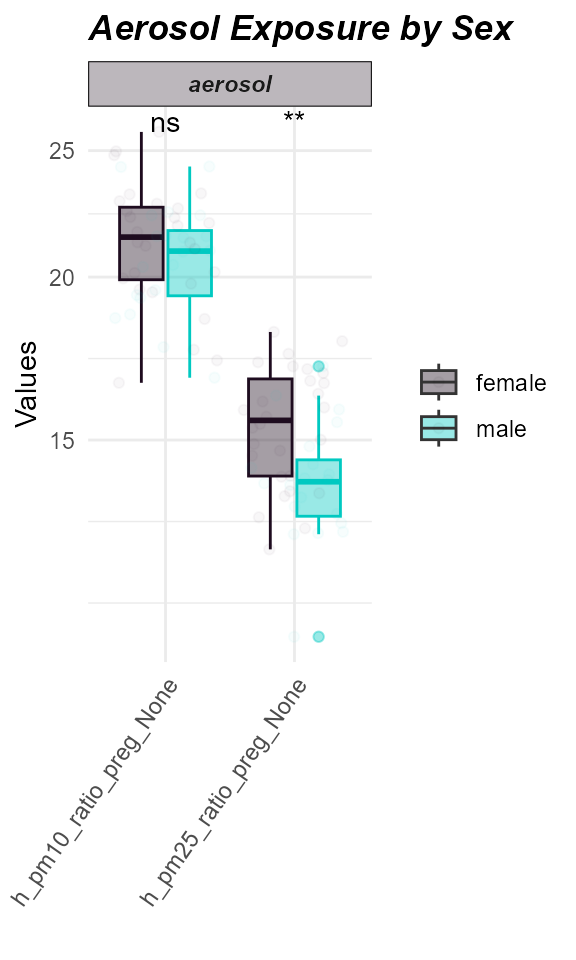

Exposure Preprocessing
Jason Laird
Source:vignettes/articles/exposure_preprocessing.Rmd
exposure_preprocessing.Rmd- Create an
exposomicsetobject from a codebook and exposure metadata. - Identify and visualize missing values in exposure data.
- Impute missing exposure values.
- Assess variable normality and apply transformations to improve it.
Getting the data in order
To get started with an exposure-outcome-only workflow, we need to create our exposomicset which stores this data:
# Load Libraries
library(tidyverse)
library(tidyexposomics)
# Load example data
data("tidyexposomics_example")
# Create exposomic set object
expom <- create_exposomicset(
codebook = tidyexposomics_example$annotated_cb,
exposure = tidyexposomics_example$meta
)You’ll notice it took two inputs, (1) a codebook with information about the exposures (see more about codebooks here), and (2) the meta data which contain the exposures and covariate information.
For the sake of simplicity we will focus on a short list of exposures:
# Grab exposure variables
exp_vars <- tidyexposomics_example$annotated_cb |>
filter(category %in% c(
"aerosol",
"main group molecular entity",
"polyatomic entity"
)) |>
pull(variable) |>
as.character()Quality Control
Missingness
Oftentimes when collecting data, there are missing values. Let’s use
the plot_missing function to determine where our missing
values are:
# Plot the missingness summary
plot_missing(
exposomicset = expom,
plot_type = "summary",
threshold = 0
)
Here we see that there are 4 variables in the exposure data that are missing data. Let’s take a look at them:
# Plot missing variables withing exposure group
plot_missing(
exposomicset = expom,
plot_type = "lollipop",
threshold = 0,
layers = "Exposure"
)
Percent missingness per exposure variable. Parity,
h_parity_None, shows the highest missingness.
Here we see that one variable, h_parity_None, has about
4% missing values. We can apply a missingness filter using the
filter_missing function. However, given that this level of
missingness is quite low, we will not be applying a missingness filter
and instead impute the missing data.
Imputation
The run_impute_missing function is used to impute
missing values. Here we can specify the imputation method for exposure
and omics data separately.
The exposure_impute_method argument is used to set the
imputation method for exposure data, and the
omics_impute_method argument is used to set the imputation
method for omics data. The omics_to_impute argument is used
to specify which omics data to impute. Here we will impute the exposure
data given using the missforest method, but other options
for imputation methods include:
median: Imputes missing values with the median of the variable.mean: Imputes missing values with the mean of the variable.knn: Uses k-nearest neighbors to impute missing values.mice: Uses the Multivariate Imputation by Chained Equations (MICE) method to impute missing values.missforest: Uses the MissForest method to impute missing values.lod_sqrt2: Imputes missing values using the square root of the lower limit of detection (LOD) for each variable. This is useful for variables that have a lower limit of detection, such as chemical exposures.
# Impute missing values
expom <- run_impute_missing(
exposomicset = expom,
exposure_impute_method = "missforest",
exposure_cols = exp_vars
)Normality Check
When determining variable associations, it is important to check the
normality of the data. The run_normality_check function is
used to check the normality of the data.
# Check variable normality
expom <- run_normality_check(
exposomicset = expom,
action = "add"
)The transform_exposure function is used to transform the
data to make it more normal. Here the transform_method is set to
boxcox_best as it will automatically select the best
transformation method based on the data. The
transform_method can be manually set to log2,
sqrt, or x_1_3 as well. We specify the
exposure_cols argument to set the columns to transform.
# Transform variables
expom <- transform_exposure(
exposomicset = expom,
transform_method = "boxcox_best",
exposure_cols = exp_vars
)To check the normality of the exposure data, we can use the
plot_normality_summary function. This function plots the
normality of the data before and after transformation. The
transformed argument is set to TRUE to plot
the normality status of the transformed data.
# Examine normality summary
plot_normality_summary(
exposomicset = expom,
transformed = TRUE
)
Exposure Summary
We can summarize the exposure data using the
run_summarize_exposures function. This function calculates
summary statistics for each exposure variable, including the number of
values, number of missing values, minimum, maximum, range, sum, median,
mean, standard error, and confidence intervals. The
exposure_cols argument determines which variables to
include in the summary.
# Summarize exposure data
run_summarize_exposures(
exposomicset = expom,
action = "get",
exposure_cols = exp_vars
) |>
head()## # A tibble: 6 × 27
## variable n_values n_na min max range sum median mean se ci_lower
## <chr> <dbl> <dbl> <dbl> <dbl> <dbl> <dbl> <dbl> <dbl> <dbl> <dbl>
## 1 h_pm10_ra… 48 0 16.6 25.8 9.25 1.01e3 21.3 21.0 0.31 20.4
## 2 h_pm25_ra… 48 0 10.6 18.2 7.55 7.12e2 14.7 14.8 0.24 14.3
## 3 hs_bpa_ma… 48 0 0 2.31 2.31 7.30e1 1.58 1.52 0.05 1.41
## 4 hs_mibp_c… 48 0 0.1 0.22 0.11 7.83e0 0.17 0.16 0 0.16
## 5 hs_pb_c_L… 48 0 1.44 5 3.56 1.59e2 3.32 3.32 0.1 3.11
## 6 hs_pfhxs_… 48 0 0 2.14 2.13 6.72e1 1.49 1.4 0.07 1.25
## # ℹ 16 more variables: ci_upper <dbl>, variance <dbl>, sd <dbl>,
## # coef_var <dbl>, period <chr>, location <chr>, description <chr>,
## # var_type <chr>, transformation <chr>, selected_ontology_label <chr>,
## # selected_ontology_id <chr>, root_id <chr>, root_label <chr>,
## # category <chr>, category_source <chr>, transformation_applied <chr>Exposure Visualization
To visualize our exposure data, we can use the
plot_exposures function. This function allows us to plot
the exposure data in a variety of ways. Here we will plot the exposure
data using a boxplot. The exposure_cat argument is used to
set the exposure category to plot. Additionally, we could specify
exposure_cols to only plot certain exposures. The
plot_type argument is used to set the type of plot to
create. Here we use a boxplot, but we could also use a ridge plot.
# Plot aerosol exposure distributions by sex
plot_exposures(
exposomicset = expom,
group_by = "e3_sex_None",
exposure_cols = c(
"h_pm25_ratio_preg_None",
"h_pm10_ratio_preg_None"
),
plot_type = "boxplot",
ylab = "Values",
title = "Aerosol Exposure by Sex"
)+
ggpubr::stat_compare_means(label="p.signif")
Here we see that levels of PM2.5 were higher in females compared to males.
Coverting the Exposomicset back to dataframes
If you need to grab your codebook, feel free to do so using the
extract_results function:
extract_results(
exposomicset = expom,
result ="codebook") |>
head()## # A tibble: 6 × 13
## variable period location description var_type transformation
## <chr> <chr> <chr> <chr> <chr> <chr>
## 1 h_pm10_ratio_preg_None Pregnancy Home pm10 value … numeric None
## 2 h_pm25_ratio_preg_None Pregnancy Home pm25 value … numeric None
## 3 hs_pm10_yr_hs_h_None Postnatal Home pm10 value … numeric None
## 4 hs_pm25_yr_hs_h_None Postnatal Home pm25 value … numeric None
## 5 h_mbmi_None Pregnancy NA Maternal pr… numeric None
## 6 e3_gac_None Pregnancy NA Gestational… numeric None
## # ℹ 7 more variables: selected_ontology_label <chr>,
## # selected_ontology_id <chr>, root_id <chr>, root_label <chr>,
## # category <chr>, category_source <chr>, transformation_applied <chr>If you want to grab the exposure+metadata do so using the
pivot_sample function:
expom |>
pivot_sample() |>
head()## # A tibble: 6 × 19
## .sample e3_sex_None hs_child_age_None h_age_None h_mbmi_None e3_gac_None
## <chr> <fct> <dbl> <dbl> <dbl> <dbl>
## 1 s812 female 6.84 35 33.2 41.4
## 2 s296 female 6.75 32.8 25.1 39.1
## 3 s242 female 6.97 33 24.6 40.4
## 4 s376 male 6.35 27.1 28.3 37
## 5 s1183 female 6.74 32.7 33.3 38.1
## 6 s98 female 6.93 23 31.2 39
## # ℹ 13 more variables: h_native_None <fct>, h_parity_None <fct>,
## # hs_asthma <dbl>, hs_zbmi_who <dbl>, h_pm10_ratio_preg_None <dbl>,
## # h_pm25_ratio_preg_None <dbl>, hs_pm10_yr_hs_h_None <dbl>,
## # hs_pm25_yr_hs_h_None <dbl>, hs_pb_c_Log2 <dbl>, hs_pfhxs_m_Log2 <dbl>,
## # hs_pfna_c_Log2 <dbl>, hs_bpa_madj_Log2 <dbl>, hs_mibp_cadj_Log2 <dbl>